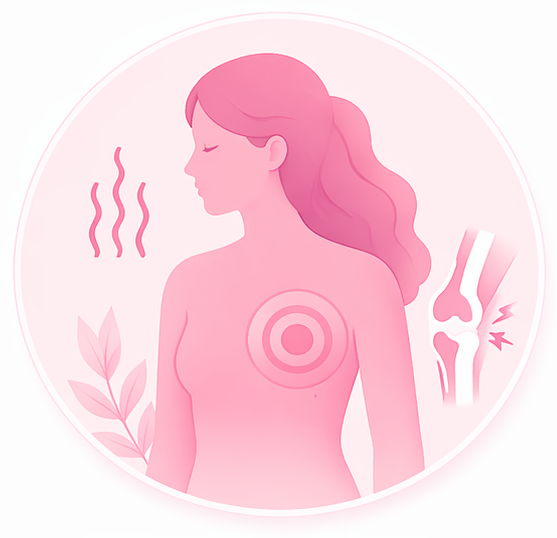

Temukan cara menjaga kesehatan tubuh dan mengurangi keluhan fisik yang umum dirasakan saat menopause.

Terapkan langkah sederhana berikut secara rutin untuk membantu tubuh tetap bugar, nyaman, dan lebih siap menghadapi perubahan menopause.
Olahraga teratur membantu menjaga kekuatan otot, kepadatan tulang, dan kesehatan jantung.
Makanan bergizi membantu tubuh tetap berenergi dan menjaga keseimbangan hormon.
Tidur yang cukup membantu tubuh pulih dan menjaga keseimbangan hormon serta suasana hati.
Stres yang tidak dikelola dapat memperburuk keluhan fisik dan membuat tubuh lebih mudah lelah.
Air membantu menjaga fungsi tubuh dan mengurangi keluhan seperti sakit kepala dan kelelahan.
Pemeriksaan rutin membantu mendeteksi risiko penyakit sejak dini.